무선설비산업기사 (2017-03-05 기출문제)
1과목: 디지털 전자회로
1. RC 평활회로에서 시정수 RC=1이고 5[V]의 구형펄스를 입력했을 때 커패시턴스의 방전시 파형으로 맞는 것은?
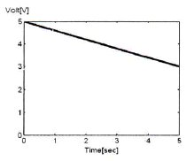
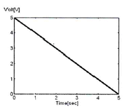
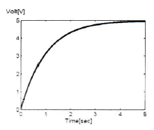
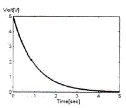
(정답률: 84%)

2. 다음 중 초크입력형 평활회로의 특징에 대한 설명으로 틀린 것은?
- 출력직류전압이 낮다.
- 전압변동률이 적다.
- 첨두 역전압이 높다.
- 부하저항이 적을수록 맥동이 적다.
(정답률: 73%)
3. 크로스오버(Crossover) 일그러짐은 어떤 증폭방식에서 발생하는가?
- A급
- B급
- AB급
- C급
(정답률: 76%)
4. 다음 그림의 회로에 대한 선형동작을 위한 교류콜렉터(Collector) 전류의 최대 변동값 IC(p-p)(Peak to Peak)은 얼마인가? (단, 베이스-이미터 전압 VBE=0으로 가정한다.)
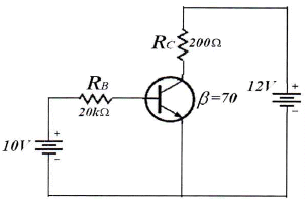
- 20[mA]
- 50[mA]
- 60[mA]
- 70[mA]
(정답률: 66%)
5. 다음 중 이미터 폴로워(Emitter Follower)의 특징이 아닌 것은?
- 입력 임피던스가 높다.
- 출력 임피던스가 낮다.
- 전압 이득이 1에 가깝다.
- 전류 이득이 1에 가깝다.
(정답률: 73%)
6. 다음 중 무궤환시 회로와 비교해서 부궤환시 증폭기의 일반적 특성이 아닌 것은?
- 부하 변동에 의한 이득 변동이 감소한다.
- 저역 차단주파수가 증가한다.
- 이득이 감소한다.
- 일그러짐과 잡음이 감소한다.
(정답률: 62%)
7. 다음 중 수정발진기의 주파수 안정도가 양호한 이유로 틀린 것은?
- 수정진동자의 Q(Quality-factor)가 높다.
- 발진을 만족하는 유도성 주파수 범위가 매우 좁다.
- 수정진동자는 항온조 내에 둔다.
- 부하변동을 전혀 받지 않는다.
(정답률: 73%)
8. 다음 중 발진기에서 이용되는 궤환회로로 옳은 것은?
- 정궤환회로
- 부궤환회로
- 정궤환과 부궤환 모두 사용한다.
- 궤환회로를 사용하지 않는다.
(정답률: 85%)
9. 다음 중 교류 신호를 구성하는 기본적인 요소가 아닌 것은?
- 진폭
- 주파수
- 증폭도
- 위상
(정답률: 80%)
10. 다음 중 콜렉터 변조 회로의 특징으로 틀린 것은?
- 직선성이 우수하다.
- 피변조파의 동작점을 C급으로 한다.
- 100[%] 변조가 가능하다.
- 소전력 송신기에 매우 적합하다.
(정답률: 71%)
11. 다음 설명과 같은 특징을 갖는 변조방식은 어느 것인가?
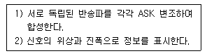
- BPSK
- DPSK
- QAM
- QPSK
(정답률: 88%)
12. 다음 중 펄스변조방식이 아닌 것은?
- 펄스진폭변조(PAM)
- 펄스폭변조(PWM)
- 펄스수변조(PNM)
- 펄스반응변조(PRM)
(정답률: 76%)
13. 다음 중 슈미트 트리거(Schmitt Trigger)의 출력파형으로 적합한 것은?
- 구형파
- 램프파
- 톱니파
- 정현파
(정답률: 81%)
14. 다음 중 저역통과 RC회로에서 시정수(Time Constant)에 대한 설명으로 옳은 것은?
- 출력신호 최종값의 50[%]에 도달할 때까지의 입력신호에 대한 응답 상승속도
- 출력신호 최종값의 63.2[%]에 도달할 때까지의 입력신호에 대한 응답 상승속도
- 출력신호 최종값의 76.5[%]에 도달할 때까지의 입력신호에 대한 응답 상승속도
- 출력신호 최종값의 81.2[%]에 도달할 때까지의 입력신호에 대한 응답 상승속도
(정답률: 71%)
15. 논리식
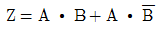
단순화한 것은?- Z = A
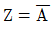
- Z = B
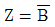
(정답률: 81%)
16. 다음의 카르노 맵을 간략화한 논리식으로 옳은 것은?
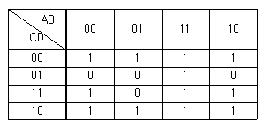
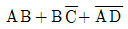
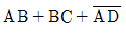
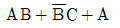
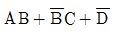
(정답률: 75%)
17. 16진수 (2AE)16을 8진수로 변환하면?
- (257)8
- (1256)8
- (2557)8
- (4317)8
(정답률: 84%)
18. 다음은 디지털 시계의 블록 다이어그램이다. 괄호 안에 들어갈 알맞은 항목은 무엇인가?
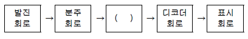
- 플립플롭회로
- 카운터회로
- 증폭회로
- 드라이브회로
(정답률: 85%)
19. 다음 중 비동기식 계수기에 관한 설명으로 틀린 것은?
- Ripple Counter는 비동기식 계수기이다.
- 전단의 출력이 다음 단의 트리거로 작용한다.
- 각 단의 지연이 거의 없어 반응이 비교적 빠른 계수기이다.
- 상향 또는 하향으로 설계할 수 있다.
(정답률: 65%)
20. 다음 중 레지스터의 기능으로 옳은 것은?
- 펄스 발생기이다.
- 카운터의 대용으로 쓰인다.
- 회로를 동기시킨다.
- 데이터를 일시 저장한다.
(정답률: 89%)
2과목: 무선통신 기기
21. 다음은 FM송신기 블록도의 일부이다. 3체배 한 후 최대주파수편이가 ±6[kHz]이면, FM 변조 후 3체배하기 전의 최대 주파수편이(Δf)는 얼마인가?
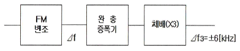
- Δf = ±1[kHz]
- Δf = ±2[kHz]
- Δf = ±6[kHz]
- Δf = ±12[kHz]
(정답률: 90%)
22. 다음 중 DSB(Double Side Band) 통신방식과 비교한 SSB(Single Side Band) 통신방식의 장점에 대한 설명으로 적합하지 않은 것은?
- 점유주파수 대역폭은 DSB의 반이다.
- DSB에 비해 장치가 간단하다.
- DSB에 비해 선택성 페이딩에 강하다.
- DSB에 비해 작은 송신전력으로 양질의 통신이 가능하다.
(정답률: 78%)
23. 다음 중 방향 탐지기의 구성 요소가 아닌 것은?
- 안테나 장치
- 수신 장치
- 지시 장치
- 비콘 송신 장치
(정답률: 84%)
24. 다음 중 무선수신기의 선택도를 높이기 위한 방법으로 맞는 것은?
- 동조회로의 Q를 적게 한다.
- 대역폭은 최대한으로 크게 한다.
- 대역외의 차단특성을 평탄하게 한다.
- 차단대역의 감쇠경도를 크게 한다.
(정답률: 46%)
25. 디지털 신호의 펄스열을 그대로 또는 다른 형식의 펄스 파형으로 변환시켜 전송하는 방식은?
- 베이스밴드 전송방식
- 광대역 전송방식
- 협대역 전송방식
- 반송대역 전송방식
(정답률: 83%)
26. 다음 중 디지털 데이터 0과 1을 아날로그 통신망을 사용해 전송할 때 반송파의 진폭에 실어 보내는 변조 기술은 무엇인가?
- ASK(Amplitude Shift Keying)
- FSK(Frequency Shift Keying)
- PSK(Phase Shift Keying)
- PCM(Pulse Code Modulation)
(정답률: 71%)
27. 다음 중 무선통신망의 구축 기획에 포함되는 통상적인 업무가 아닌 것은?
- 요구 분석
- 분쟁 분석
- 일정 계획
- 품질 계획
(정답률: 79%)
28. 다음 중 마이크로파 통신에 대한 설명으로 틀린 것은?
- 안테나 이득을 크게 할 수 있다.
- 외부잡음의 영향에 약하다.
- 광대역 전송이 가능하다.
- 주로 가시거리 통신이 행해진다.
(정답률: 82%)
29. 다음 중 축전지의 AH(암페어시)가 의미하는 것은?
- 사용가능 시간
- 충전전류
- 축전지의 용량
- 최대 사용 전류
(정답률: 88%)
30. 다음 중 위성통신에 관한 일반적인 사항으로 틀린 것은?
- 주로 SHF(Super High Frequency)대를 이용하고 위성에 의한 원거리 통신을 한다.
- 위성통신시스템에서는 다중화기술의 채택이 불가능하다.
- 마이크로웨이브 통신방식과 유사한 전파 가시거리 통신이다.
- 정지궤도에 떠있는 통신위성은 중계소 역할을 한다.
(정답률: 81%)
31. 다양한 통신 시스템에서 안테나는 상호간에 송ㆍ수신하기 위한 기본 요소이다. 다음 중 안테나의 파라미터에 해당하지 않는 것은?
- 실효복사전력
- 전압 정재파비
- 안테나 지향성
- 안테나 전원 장치
(정답률: 80%)
32. 다음 중 DVB-T(COFDM) 전송방식에서 사용하는 변조방식이 아닌 것은?
- QPSK(Quadrature Phase Shift Keying)
- 16-QAM(Quadrature Amplitude Modulation)
- 64-QAM(Quadrature Amplitude Modulation)
- binary FSK(Frequency Shift Keying)
(정답률: 84%)
33. 다음 중 이동전화망의 교환국에 시설되는 VLR(Visitor Location Register) 및 HLR(Home Location Register)의 기능과 가장 밀접한 관계가 있는 것은?
- 로밍(Roaming)
- 핸드오프(Hand-off)
- 자동전력제어(APC)
- 스크램블(Scramble)
(정답률: 69%)
34. Off-Line 동작 방식의 무정전공급장치 (Uninterruptible Power Supply)는 입력 전압이 변동되면 출력 전압이 어떻게 되는가?
- 입력 변동에 관계없이 정 전압 공급한다.
- 입력 변동과 같이 변동한다.
- 입력 변동에 상관없이 출력 변동이 주기적으로 변동된다.
- 입력 변동시 출력 변동이 1/2 주기적으로 바뀐다.
(정답률: 59%)
35. 장시간 부동충전방식으로 충전할 경우 축전지 각각의 특성에 따라 방전량에 차이가 발생하여 축전지의 충전전압이 달라져 충전부족 상태의 축전지가 생길 수 있다. 이런 문제점을 해결하기 위한 충전방식으로 적합한 것은?
- 급속충전방식
- 세류충전방식
- 균등충전방식
- 정전류충전방식
(정답률: 89%)
36. 송신안테나로부터 일정거리 떨어진 A지점에서 측정한 전계강도가 20[dB]일 때 A지점보다 2배 떨어진 B지점에서의 전계강도는 몇 [μV/m]인가?
- 1[μV/m]
- 2[μV/m]
- 5[μV/m]
- 10[μV/m]
(정답률: 70%)
37. 다음 중 무선 송신기의 신호대잡음비(S/N) 측정시 필요하지 않은 측정기는?
- 변조도계
- 오실로스코프
- 직선 검파기
- 저주파 발진기
(정답률: 85%)
38. 상온에서 만충전 시 전해액의 비중이 1.28, 방전종지 시 비중이 1.02이고, 용량이 100[AH]인 축전지에서 현재 상태의 비중이 1.25일 경우 현재 방전량은 약 얼마인가?
- 9.9[AH]
- 10.8[AH]
- 11.5[AH]
- 12.1[AH]
(정답률: 65%)
39. 다음 중 전송선로상에서의 등가 임피던스와 등가 어드미턴스의 비를 의미하는 것은 무엇인가?
- 특성 임피던스
- 정재파비
- 실효 임피던스
- 전계강도
(정답률: 74%)
40. 다음 중 송신기의 점유주파수대폭 측정법이 아닌 것은?
- 필터를 사용하는 방법
- 파노라마 수신기를 이용하는 방법
- 주파수 편이계를 사용하는 방법
- 스펙트럼 분석기를 사용하는 방법
(정답률: 71%)
3과목: 안테나 개론
41. “높은 주파수를 갖는 전류에 의해 변화하고 있는 전계는 자계를 발생한다”라는 사실을 뒷받침하는 이론으로 적합한 것은?
- 라플라스 방정식
- 렌쯔의 법칙
- 맥스웰 방정식
- 베르누이 정리
(정답률: 87%)
42. 다음 중 손실을 갖는 매질 내를 전파하는 평면파의 감쇠정수에 대한 설명으로 옳은 것은?
- 감쇠정수는 표피두께에 반비례한다.
- 감쇠정수는 주파수에 무관하다.
- 감쇠정수는 도체의 고유 도전율에 반비례한다.
- 감쇠정수의 크기와 위상정수 사이에는 상호 역의 관계를 갖는다.
(정답률: 72%)
43. 전파의 단파 주파수 범위에 해당하는 파장 범위는?
- 0.1[m]~1[m]
- 1[m]~10[m]
- 10[m]~100[m]
- 100[m]~1,000[m]
(정답률: 81%)
44. 다음 중 어떤 구간 L에서 도파관의 장변을 줄여 줌으로써 감쇠를 얻는 방식의 도파관 감쇠기는?
- 저항 감쇠기
- 리액턴스 감쇠기
- 종단 감쇠기
- 콘덕턴스
(정답률: 83%)
45. 다음 중 휴대 전화 안테나와 전력증폭기 사이에 아이솔레이터(Isolator)를 삽입하였을 경우의 효과에 대한 설명으로 틀린 것은?
- 안테나의 임피던스 변동에 대하여 전력증폭기의 출력으로부터 본 실효적인 부하변동을 적게 할 수 있다.
- 안테나로부터 되돌아오는 신호를 감쇠없이 흡수함으로써 전력증폭기의 안정도를 높인다.
- 전력증폭기의 전력효율 저하를 방지하고 소비전류를 감소할 수 있다.
- 인접채널의 누설전력을 적게 할 수 있다.
(정답률: 55%)
46. 다음 중 급전선의 필요조건으로 적합하지 않은 것은?
- 송신용일 경우 절연 내력이 좋아야 한다.
- 급전선의 파동임피던스가 적당해야 한다.
- 전송 효율이 좋아야 한다.
- 선의 굵기가 커서 전기저항이 적어야 한다.
(정답률: 83%)
47. 다음 중 급전선에 대한 설명으로 옳은 것은?
- 전송 효율이 좋고 정합이 용이해야 한다.
- 특성임피던스는 길이와 관계가 있다.
- 감쇠정수가 커야 한다.
- 무왜곡 조건은 RG=CL로 정의된다.
(정답률: 83%)
48. 다음 중 임피던스 정합에 대한 내용으로 틀린 것은?
- 부하가 선로에 정합되었을 때 급전선에서의 전력손실이 최소이다.
- 수신장치에서 시스템의 S/N비를 향상시킨다.
- 전력 분배망 회로에서 진폭과 위상의 오차를 감소시킨다.
- 부하 임피던스 실수부가 “0”인 경우에만 정합회로를 구할 수 있다.
(정답률: 84%)
49. 다음 중 안테나의 구조에 의한 분류로 적합하지 않은 것은?
- 선상 안테나
- 판상 안테나
- 개구면 안테나
- 정재파 안테나
(정답률: 71%)
50. 공급전력이 1[kW]일 때 안테나 전류가 10[A]인 안테나의 경우 안테나에 16[kW]의 전력을 공급하면 안테나 전류의 값은 얼마인가?
- 10[A]
- 20[A]
- 40[A]
- 80[A]
(정답률: 72%)
51. 다음 그림과 같은 안테나 접지방식은?
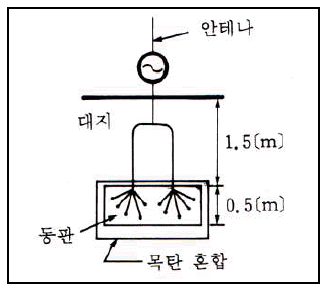
- 심굴 접지
- 다중 접지
- 가상 접지
- 방사상 접지
(정답률: 84%)
52. 다음 중 안테나의 광대역성을 갖도록 하는 방법으로 틀린 것은?
- 안테나의 Q를 작게 한다.
- 상호 임피던스의 특성을 이용한다.
- 진행파 여진형의 소자를 이용한다.
- 안테나의 도체의 직경을 좁게 한다.
(정답률: 74%)
53. 다음 중 슬롯 안테나의 대역폭을 넓게 하는 방법으로 옳은 것은?
- 슬롯의 폭을 넓게 한다.
- 슬롯의 폭을 좁게 한다.
- 슬롯을 여러 개 배열한다.
- 슬롯의 저항을 설치한다.
(정답률: 78%)
54. 다음 중 임의의 송수신 지점간 무선통신에서 자유공간 전송손실 특성에 대한 설명으로 틀린 것은?
- 사용주파수가 2배로 높아지면 손실이 6[dB] 증가한다.
- 송신 안테나 이득이 높아지면 전송 손실이 감소한다.
- 수신 안테나 이득이 높아지면 전송 손실이 감소한다.
- 안테나의 유효 면적은 사용주파수와 무관하다.
(정답률: 77%)
55. 다음 중 단파통신 전파예보에서 알 수 없는 것은?
- MUF(최고사용주파수)
- VHF대역의 전파잡음의 발생 시간대
- LUF(최저사용주파수)
- 통신할 수 있는 최적사용주파수
(정답률: 78%)
56. 다음 중 대류권의 변동현상에 의한 페이딩의 분류에 포함되지 않는 것은?
- 선택성 페이딩
- 감쇠형 페이딩
- 덕트형 페이딩
- 산란형 페이딩
(정답률: 54%)
57. 다음 중 지표면에서 가장 가까운 전리층 영역은?
- A층 영역
- D층 영역
- E층 영역
- F층 영역
(정답률: 75%)
58. 두 개 이상의 안테나를 서로 떨어진 곳에 설치하고 두 출력을 합성하여 페이딩을 방지하는 방식은?
- 공간 다이버시티
- 주파수 다이버시티
- 편파 다이버시티
- 분할 다이버시티
(정답률: 86%)
59. 다음 중 LBS(Location Base Service)의 기반 기술이 아닌 것은?
- LDT(Location Determination Technology)
- LEP(Location Enabled Platform)
- LAP(Location Application Program)
- LPC(Location Processor Controller)
(정답률: 68%)
60. 다음 중 지표파에 관한 설명으로 옳지 않은 것은?
- 대지가 완전 도체라고 할 때 전계 강도는 수치거리 또는 감쇄계수로 표현할 수 있다.
- 유전율이 작을수록 감쇠가 적어진다.
- 지표에 가까운 곳에서는 전파의 진행 속도가 늦어진다.
- 수평편파 쪽이 감쇠가 적다.
(정답률: 66%)
4과목: 전자계산기 일반 및 무선설비기준
61. 10진수의 산술 연산은 팩형식(Pack Decimal)의 데이터에 대하여 행하며, 필드의 길이는 16바이트까지 지정할 수 있는데 10진수의 최대 자리수는?
- 15자리
- 16자리
- 31자리
- 32자리
(정답률: 68%)
62. 다음 중 ROM과 RAM의 차이점을 설명한 것으로 틀린 것은?
- RAM은 휘발성 메모리이다.
- EPROM은 한 번 쓰면 지울 수 없다.
- RAM은 동적 RAM과 정적 RAM으로 나눌 수 있다.
- ROM의 종류에는 EPROM, EEPROM, PROM 등이 있다.
(정답률: 87%)
63. 다음 중 사진 및 그 외의 자료로부터 이미지를 읽어들이는 장치는?
- 키보드
- 스캐너
- 마우스
- 광학 문자 판독기(OCR)
(정답률: 86%)
64. 병렬 컴퓨터에서 컴퓨터의 속도를 향상시키기 위한 기술 중에 Super-Scalar을 설명한 것은?
- 한 명령어를 실행하는 과정을 여러 단계로 나누어 실행하는 기술
- 파이프 라이닝을 여러 개 두고 병행 실행하는 기술
- 명령을 그룹화하여 한번에 여러 개 명령을 동시에 처리하는 기술
- 동시수행가능 명령어를 컴파일 수준에서 하나로 압축하는 기술
(정답률: 62%)
65. 정보데이터 비트가 4비트 1011일 때 짝수 패리티 비트의 전체 해밍코드는? (단, 맨 왼쪽 비트가 1번재 비트이다.)
- 0110011
- 1001001
- 0100101
- 1011010
(정답률: 50%)
66. 다음 중 어셈블리 언어(Assembly Language)의 특징이 아닌 것은?
- 어려운 기계어 명령들을 쉬운 기호로 표현된다.
- 어셈블리 언어로 작성된 프로그램은 하드웨어에 종속적이다.
- 기계어에 비해 프로그래밍하기 쉽다.
- 하드웨어에 직접 접근할 수 없다.
(정답률: 77%)
67. 다음 중 주소 지정 방식에 대한 설명으로 틀린 것은?
- 직접 주소 지정 방식보다 간접 주소 지정의 주소 범위가 더 넓다.
- 간접 주소 지정 방식은 두 번 이상 메모리에 접속해야 실제 데이터를 가져온다.
- 레지스터 간접 주소 지정 방식에서 레지스터 안에 있는 값은 실제 데이터 주소이다.
- 즉시(또는 즉치) 주소 지정 방식에서 오퍼랜드는 기억장치의 주소 값이다.
(정답률: 57%)
68. 다음 중 스케줄링에 대한 설명으로 틀린 것은?
- 컴퓨터 시스템을 구성하고 있는 주기억장치, 입출력장치, 처리시간 등의 시스템 자원을 언제 배분할 것인가를 결정한다.
- 처리 능력의 최대 응답시간, 반환시간, 대기시간의 단축 예측이 가능해야 한다.
- 여러 개의 CPU가 공동으로 하나의 일을 수행하는 경우에 전체로서 그 일의 실행시간을 최단으로 하도록 제어한다.
- 동적 스케줄링은 각 태스크를 프로세서에게 할당하고 실행되는 순서가 사용자의 알고리즘에 따르거나 컴파일할 때에 컴파일러에 의해 결정되는 스케줄링이다.
(정답률: 65%)
69. 다음 Process Scheduling 정책 중 남은 시간이 가장 짧은 JOB을 우선적으로 처리하는 방식은?
- FIFO
- SJF
- HRN
- SRT
(정답률: 67%)
70. 다음 중 C언어의 특징에 대한 설명으로 틀린 것은? (문제 오류로 실제 시험에서는 3,4번이 정답처리 되었습니다. 여기서는 3번을 누르면 정답 처리 됩니다.)
- 어셈블리어와 연계되는 언어이다.
- 강력하고 융통성이 많다.
- UNIX 체제에서는 사용할 수 없다.
- 객체지향형 언어이다.
(정답률: 89%)
71. 다음 중 정보통신공사업법 시행령이 정하는 공사범위가 아닌 것은?
- 「방송법」등 방송관계법령에 따른 방송설비공사
- 수전설비를 포함한 정보통신전용 전기시설설비공사
- 전기통신관련법령 및 전파관계법령에 따란 통신설비공사
- 정보통신관계법령에 따라 정보통신설비를 이용하여 정보를 제어, 저장 및 처리하는 정보설비공사
(정답률: 75%)
72. 무선설비를 보호하기 위한 보호 장치로서 전원 회로의 퓨즈 또는 차단기는 안테나공급전력이 얼마 이상일 때 갖추어야 하는가?
- 5와트 이상
- 7.5와트 이상
- 10와트 이상
- 12.5와트 이상
(정답률: 72%)
73. 다음 중 미래창조과학부장관이 주파수할당을 하고자 할 때의 공고사항이 아닌 것은?
- 국제주파수등록위원회의 기술기준
- 할당대상 주파수 및 대역폭
- 주파수 할당 대가
- 주파수용도 및 기술방식에 관한 사항
(정답률: 65%)
74. “방송통신기자재 등의 적합성평가에 관한 고시”의 주무부처는?(관련 규정 개정전 문제로 여기서는 기존 정답인 1번을 누르면 정답 처리 됩니다. 자세한 내용은 해설을 참고하세요)
- 미래창조과학부
- 교육부
- 산업통상자원부
- 국토교통부
(정답률: 88%)
75. 다음 무선국 중 허가의 유효기간이 무기한인 것은?
- 의무선박국
- 방송국
- 해안지구국
- 실험국
(정답률: 75%)
76. 무선국의 정기검사 유효 기간이 3년인 무선국은 허가유효기간 만료일 전후 얼마 이내에 정기검사를 받도록 되어 있는가?
- 1개월
- 2개월
- 3개월
- 6개월
(정답률: 71%)
77. 다음 중 정보통신설비 공사의 감리원 업무범위가 아닌 것은?
- 설계변경서 작성
- 공사계획 및 공정표의 검토
- 공사진척부분에 대한 조사 및 검사
- 공사업자가 작성한 시공상세도면의 검토 및 확인
(정답률: 83%)
78. 다음 중 예비전원 및 예비품의 무선설비기준이 아닌 것은?
- 의무선박국의 비상등의 전원은 해당 무선설비를 통상 조명하는데 사용되는 전원으로부터 독립되어 있지 않아야 한다.
- 의무선박국과 의무항공기국은 주 전원설비의 고장 시 대체할 수 있는 예비전원시설을 갖추어야 한다.
- 의무항공기국의 예비전원은 항공기의 항행안전을 위하여 필요한 무선설비를 30분 이상 동작시킬 수 있는 성능을 가져야 한다.
- 의무선박국은 송신장치의 모든 전력으로 시험할 수 있는 시험용 안테나를 비치하여야 한다.
(정답률: 69%)
79. 다음 중 정보통신공사업법의 목적으로 틀린 것은?
- 공사업의 건전한 발전 도모
- 정보통신공사의 적절한 시공
- 정보통신공사의 도급에 부가적인 사항 규정
- 정보통신공사의 조사, 설계의 기본사항 규정
(정답률: 68%)
80. 다음 문장의 괄호안에 들어 갈 내용으로 적합한 것은?
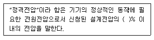
- ±2
- ±4
- ±6
- ±8
(정답률: 85%)
보기 중 ""는 1초 이내에 완전히 충전 및 방전될 수 있는 커패시턴스를 선택한 것이므로 정답이다. 다른 보기들은 1초 이내에 완전히 충전 및 방전될 수 없는 커패시턴스를 선택한 것이다.